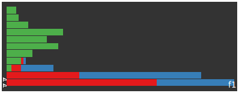
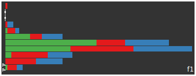
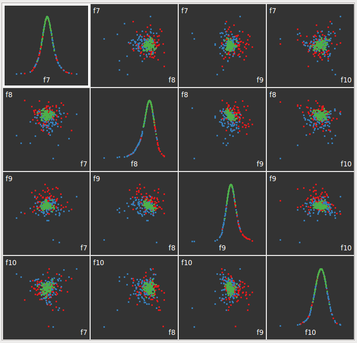

<< real data example index conclusions >>
this time let's so the same but include a really simple normalisation; divide each term's weight based on the document length.
when we do this we get an immediate improvement on the spread for the first feature. like last time it consists of english construct words but this time isn't dominated by autoblog articles
| feature 1 article strengths | |||||
| (articles near top most strongly associated) | |||||
| without normalisation | with normalisation | ||||
|  |  | ||||
| autoblog | the register | perez hilton | |||
and like last time the following few features (f2 to f6) are related to single documents which have some fundamental difference in them to the entire corpus
features 7 through 10 show an interesting seperation of the documents consider especially f8 vs f9
| feature 7 to feature 9 scatterplot matrix | |||||
|  | |||||
| autoblog | the register | perez hilton | |||
here's an undirected 2d tour of the feature space for features 7 through 10, seems to be quite a bit of seperation.
| feature 7 to feature 9 scatterplot matrix | |||||
| autoblog | the register | perez hilton | |||
so finally, some conclusions